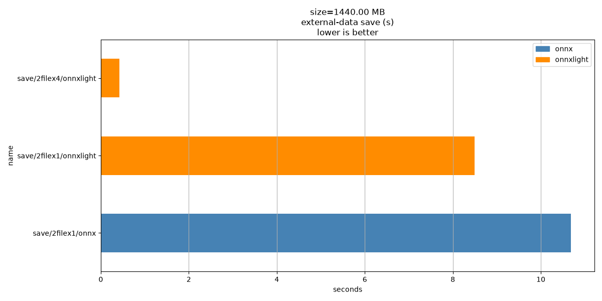
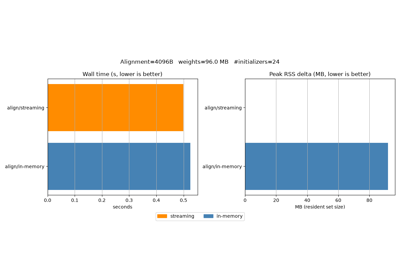
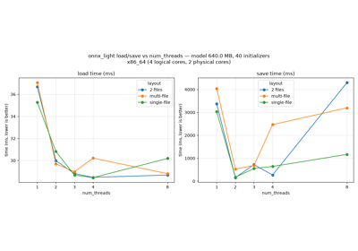

Note
Go to the end to download the full example code.
Profiles ONNX external-data save time#
This example profiles how long it takes to save a model with external data
using onnx and onnx_light.onnx.
It follows the same benchmark style as Measures loading and saving time for an ONNX model but focuses only on the external-data save scenario.
import os
import shutil
import cProfile
import pstats
import matplotlib.patches as mpatches
import numpy as np
import pandas
import onnx_light.onnx.helper as oh
import onnx_light.onnx.numpy_helper as onh
import onnx_light.onnx as onnxl
N_INIT = 40
DIM = 256 if os.environ.get("UNITTEST_GOING") == "1" else 3072
def make_model(n_init: int = N_INIT, dim: int = DIM) -> onnxl.ModelProto:
"""Creates a synthetic ONNX model with large initializers."""
initializers = []
nodes = []
inputs = [oh.make_tensor_value_info("X", onnxl.TensorProto.FLOAT, [None, dim])]
prev = "X"
for i in range(n_init):
weight_name = f"W{i}"
out_name = f"Y{i}"
w = np.random.randn(dim, dim).astype(np.float32)
initializers.append(onh.from_array(w, name=weight_name))
nodes.append(oh.make_node("Gemm", [prev, weight_name], [out_name], transB=1))
prev = out_name
outputs = [oh.make_tensor_value_info(prev, onnxl.TensorProto.FLOAT, [None, dim])]
graph = oh.make_graph(nodes, "bench_graph", inputs, outputs, initializer=initializers)
return oh.make_model(graph, opset_imports=[oh.make_opsetid("", 18)], ir_version=9)
def profile_call(name: str, fn, repeat=1) -> dict:
"""Profiles the given callable with cProfile.
Args:
name: Benchmark name used in printed output and the result row.
fn: Callable to execute under cProfile.
Returns:
A dictionary with the benchmark name and total profiled time in seconds.
"""
profiler = cProfile.Profile()
for _ in range(repeat):
profiler.runcall(fn)
profile_stats = pstats.Stats(profiler).sort_stats("cumulative")
print(f"\n{name}\n{'-' * len(name)}")
profile_stats.print_stats(20)
return {"name": name, "total": float(profile_stats.total_tt)}
def _flush_file(path: str) -> None:
"""Flushes one file descriptor so benchmark timing includes write-back."""
with open(path, "r+b") as stream:
stream.flush()
os.fsync(stream.fileno())
def onnx_load(onnx_path):
import onnx
return onnx.load(onnx_path)
out_dir = "temp_plot_save_external_data_time"
os.makedirs(out_dir, exist_ok=True)
onnx_input_path = os.path.join(out_dir, "bench.onnx")
model = make_model()
size_bytes = model.ByteSize()
onnxl.save(model, onnx_input_path)
print(f"Model size: {size_bytes / 2 ** 20:.3f} MB")
onnx_model = onnx_load(onnx_input_path)
onnx_light_model = onnxl.load(onnx_input_path)
results = []
# ``onnx.save_model(..., save_as_external_data=True)`` mutates the in-memory
# model by replacing ``raw_data`` with external-data metadata. Benchmark it as a
# single-shot operation so the row reflects the full conversion + write cost
# instead of re-saving an already externalized model on later iterations.
# Both saved files are explicitly ``fsync``-ed so this row includes descriptor
# flush/write-back overhead, matching the ``onnxlight`` row.
onnx_external_path = os.path.join(out_dir, "out_onnx_ext.onnx")
onnx_external_location = "out_onnx_ext.data"
onnx_external_data_path = os.path.join(out_dir, onnx_external_location)
def _save_onnx_external_with_flush(onnx_model) -> None:
import onnx
assert isinstance(onnx_model, onnx.ModelProto), f"Unexpected type {type(onnx_model)}"
onnx.save_model(
onnx_model,
onnx_external_path,
save_as_external_data=True,
all_tensors_to_one_file=True,
location=onnx_external_location,
)
_flush_file(onnx_external_data_path)
_flush_file(onnx_external_path)
results.append(
profile_call(
"save/2filex1/onnx", lambda: _save_onnx_external_with_flush(onnx_model), repeat=1
)
)
print(f"{results[-1]['name']:<35} total={results[-1]['total'] * 1e3:.1f} ms")
# :func:`onnx_light.onnx.save` restores the in-memory model after the write, but we
# keep the benchmark single-shot so the rows stay directly comparable.
onnx_light_external_path = os.path.join(out_dir, "out_onnxlight_ext.onnx")
onnx_light_external_data = onnx_light_external_path + ".data"
def _save_onnxlight_external_with_flush() -> None:
onnxl.save(
onnx_light_model,
onnx_light_external_path,
location=onnx_light_external_data,
num_threads=1,
)
_flush_file(onnx_light_external_data)
_flush_file(onnx_light_external_path)
results.append(
profile_call("save/2filex1/onnxlight", _save_onnxlight_external_with_flush, repeat=1)
)
print(f"{results[-1]['name']:<35} total={results[-1]['total'] * 1e3:.1f} ms")
onnx_light_external_x4_path = os.path.join(out_dir, "out_onnxlight_ext_x4.onnx")
onnx_light_external_x4_data = onnx_light_external_x4_path + ".data"
results.append(
profile_call(
"save/2filex4/onnxlight",
lambda: onnxl.save(
onnx_light_model,
onnx_light_external_x4_path,
location=onnx_light_external_x4_data,
num_threads=4,
),
repeat=1,
)
)
print(f"{results[-1]['name']:<35} total={results[-1]['total'] * 1e3:.1f} ms")
Model size: 1440.002 MB
save/2filex1/onnx
-----------------
1579 function calls in 10.685 seconds
Ordered by: cumulative time
List reduced from 71 to 20 due to restriction <20>
ncalls tottime percall cumtime percall filename:lineno(function)
1 0.000 0.000 10.685 10.685 /home/runner/work/xadupre.github.io/xadupre.github.io/onnx-light/docs/examples/proto/plot_save_external_data_time.py:126(<lambda>)
1 0.000 0.000 10.685 10.685 /home/runner/work/xadupre.github.io/xadupre.github.io/onnx-light/docs/examples/proto/plot_save_external_data_time.py:108(_save_onnx_external_with_flush)
2 0.000 0.000 5.803 2.901 /home/runner/work/xadupre.github.io/xadupre.github.io/onnx-light/docs/examples/proto/plot_save_external_data_time.py:70(_flush_file)
2 5.802 2.901 5.802 2.901 {built-in method posix.fsync}
1 0.000 0.000 4.882 4.882 /opt/hostedtoolcache/Python/3.12.14/x64/lib/python3.12/site-packages/onnx/__init__.py:299(save_model)
1 0.000 0.000 4.718 4.718 /opt/hostedtoolcache/Python/3.12.14/x64/lib/python3.12/site-packages/onnx/external_data_helper.py:393(write_external_data_tensors)
40 0.181 0.005 4.717 0.118 /opt/hostedtoolcache/Python/3.12.14/x64/lib/python3.12/site-packages/onnx/external_data_helper.py:278(save_external_data)
40 4.527 0.113 4.527 0.113 {method 'write' of '_io.BufferedRandom' objects}
1 0.154 0.154 0.155 0.155 /opt/hostedtoolcache/Python/3.12.14/x64/lib/python3.12/site-packages/onnx/external_data_helper.py:204(convert_model_to_external_data)
1 0.000 0.000 0.009 0.009 /opt/hostedtoolcache/Python/3.12.14/x64/lib/python3.12/site-packages/onnx/__init__.py:173(_save_bytes)
1 0.009 0.009 0.009 0.009 {method 'write' of '_io.BufferedWriter' objects}
40 0.004 0.000 0.004 0.000 /opt/hostedtoolcache/Python/3.12.14/x64/lib/python3.12/site-packages/onnx/external_data_helper.py:28(_open_external_data_fd)
80 0.002 0.000 0.002 0.000 /opt/hostedtoolcache/Python/3.12.14/x64/lib/python3.12/site-packages/onnx/external_data_helper.py:176(set_external_data)
40 0.000 0.000 0.001 0.000 <frozen os>:1060(fdopen)
40 0.001 0.000 0.001 0.000 /opt/hostedtoolcache/Python/3.12.14/x64/lib/python3.12/site-packages/onnx/external_data_helper.py:58(__init__)
43 0.001 0.000 0.001 0.000 {built-in method _io.open}
43 0.001 0.000 0.001 0.000 {method '__exit__' of '_io._IOBase' objects}
80 0.000 0.000 0.000 0.000 {method 'tell' of '_io.BufferedRandom' objects}
82 0.000 0.000 0.000 0.000 /opt/hostedtoolcache/Python/3.12.14/x64/lib/python3.12/site-packages/onnx/external_data_helper.py:338(_get_initializer_tensors)
280 0.000 0.000 0.000 0.000 {method 'HasField' of 'google._upb._message.Message' objects}
save/2filex1/onnx total=10684.6 ms
save/2filex1/onnxlight
----------------------
362 function calls in 8.491 seconds
Ordered by: cumulative time
List reduced from 55 to 20 due to restriction <20>
ncalls tottime percall cumtime percall filename:lineno(function)
1 0.000 0.000 8.491 8.491 /home/runner/work/xadupre.github.io/xadupre.github.io/onnx-light/docs/examples/proto/plot_save_external_data_time.py:137(_save_onnxlight_external_with_flush)
2 0.000 0.000 6.978 3.489 /home/runner/work/xadupre.github.io/xadupre.github.io/onnx-light/docs/examples/proto/plot_save_external_data_time.py:70(_flush_file)
2 6.977 3.489 6.977 3.489 {built-in method posix.fsync}
1 1.513 1.513 1.513 1.513 /home/runner/work/xadupre.github.io/xadupre.github.io/onnx-light/onnx_light/onnx_proto/_io_helper.py:29(save)
1 0.000 0.000 0.000 0.000 /home/runner/work/xadupre.github.io/xadupre.github.io/onnx-light/onnx_light/onnx_proto/_path_security.py:40(validate_external_data_path)
2 0.000 0.000 0.000 0.000 <frozen posixpath>:420(realpath)
2 0.000 0.000 0.000 0.000 <frozen posixpath>:429(_joinrealpath)
2 0.000 0.000 0.000 0.000 {built-in method _io.open}
23 0.000 0.000 0.000 0.000 {built-in method posix.lstat}
1 0.000 0.000 0.000 0.000 /home/runner/work/xadupre.github.io/xadupre.github.io/onnx-light/onnx_light/onnx_proto/_path_security.py:13(_is_relative_and_contained)
1 0.000 0.000 0.000 0.000 {method 'disable' of '_lsprof.Profiler' objects}
2 0.000 0.000 0.000 0.000 {method '__exit__' of '_io._IOBase' objects}
24 0.000 0.000 0.000 0.000 <frozen posixpath>:71(join)
3 0.000 0.000 0.000 0.000 /opt/hostedtoolcache/Python/3.12.14/x64/lib/python3.12/pathlib.py:551(drive)
2 0.000 0.000 0.000 0.000 /opt/hostedtoolcache/Python/3.12.14/x64/lib/python3.12/pathlib.py:702(parts)
2 0.000 0.000 0.000 0.000 /opt/hostedtoolcache/Python/3.12.14/x64/lib/python3.12/pathlib.py:407(_load_parts)
3 0.000 0.000 0.000 0.000 <frozen posixpath>:405(abspath)
2 0.000 0.000 0.000 0.000 /opt/hostedtoolcache/Python/3.12.14/x64/lib/python3.12/pathlib.py:387(_parse_path)
2 0.000 0.000 0.000 0.000 /opt/hostedtoolcache/Python/3.12.14/x64/lib/python3.12/pathlib.py:748(is_absolute)
2 0.000 0.000 0.000 0.000 /opt/hostedtoolcache/Python/3.12.14/x64/lib/python3.12/pathlib.py:343(__new__)
save/2filex1/onnxlight total=8491.1 ms
save/2filex4/onnxlight
----------------------
350 function calls in 0.421 seconds
Ordered by: cumulative time
List reduced from 49 to 20 due to restriction <20>
ncalls tottime percall cumtime percall filename:lineno(function)
1 0.000 0.000 0.421 0.421 /home/runner/work/xadupre.github.io/xadupre.github.io/onnx-light/docs/examples/proto/plot_save_external_data_time.py:158(<lambda>)
1 0.420 0.420 0.421 0.421 /home/runner/work/xadupre.github.io/xadupre.github.io/onnx-light/onnx_light/onnx_proto/_io_helper.py:29(save)
1 0.000 0.000 0.000 0.000 /home/runner/work/xadupre.github.io/xadupre.github.io/onnx-light/onnx_light/onnx_proto/_path_security.py:40(validate_external_data_path)
2 0.000 0.000 0.000 0.000 <frozen posixpath>:420(realpath)
2 0.000 0.000 0.000 0.000 <frozen posixpath>:429(_joinrealpath)
23 0.000 0.000 0.000 0.000 {built-in method posix.lstat}
1 0.000 0.000 0.000 0.000 /home/runner/work/xadupre.github.io/xadupre.github.io/onnx-light/onnx_light/onnx_proto/_path_security.py:13(_is_relative_and_contained)
1 0.000 0.000 0.000 0.000 {method 'disable' of '_lsprof.Profiler' objects}
24 0.000 0.000 0.000 0.000 <frozen posixpath>:71(join)
3 0.000 0.000 0.000 0.000 /opt/hostedtoolcache/Python/3.12.14/x64/lib/python3.12/pathlib.py:551(drive)
2 0.000 0.000 0.000 0.000 /opt/hostedtoolcache/Python/3.12.14/x64/lib/python3.12/pathlib.py:702(parts)
2 0.000 0.000 0.000 0.000 /opt/hostedtoolcache/Python/3.12.14/x64/lib/python3.12/pathlib.py:407(_load_parts)
3 0.000 0.000 0.000 0.000 <frozen posixpath>:405(abspath)
2 0.000 0.000 0.000 0.000 /opt/hostedtoolcache/Python/3.12.14/x64/lib/python3.12/pathlib.py:387(_parse_path)
2 0.000 0.000 0.000 0.000 /opt/hostedtoolcache/Python/3.12.14/x64/lib/python3.12/pathlib.py:748(is_absolute)
2 0.000 0.000 0.000 0.000 /opt/hostedtoolcache/Python/3.12.14/x64/lib/python3.12/pathlib.py:343(__new__)
8 0.000 0.000 0.000 0.000 <frozen posixpath>:60(isabs)
1 0.000 0.000 0.000 0.000 /home/runner/work/xadupre.github.io/xadupre.github.io/onnx-light/onnx_light/onnx_proto/_io_helper.py:18(_infer_format)
33 0.000 0.000 0.000 0.000 <frozen posixpath>:41(_get_sep)
37 0.000 0.000 0.000 0.000 {method 'startswith' of 'str' objects}
save/2filex4/onnxlight total=420.7 ms
Results#
df = pandas.DataFrame(results).set_index("name").sort_index()
print(df)
total
name
save/2filex1/onnx 10.684586
save/2filex1/onnxlight 8.491072
save/2filex4/onnxlight 0.420716
Plot#
ax = df[["total"]].plot.barh(
title=f"size={size_bytes / 2 ** 20:.2f} MB\nexternal-data save (s)\nlower is better",
xlabel="seconds",
legend=False,
figsize=(12, 6),
)
row_names = df.index.tolist()
for container in ax.containers:
for bar, name in zip(container, row_names):
bar.set_facecolor("darkorange" if "onnxlight" in name else "steelblue")
ax.legend(
handles=[
mpatches.Patch(color="steelblue", label="onnx"),
mpatches.Patch(color="darkorange", label="onnxlight"),
]
)
ax.grid(axis="x")
ax.figure.tight_layout()
ax.figure.savefig("plot_save_external_data_time.png")

Cleanup#
shutil.rmtree(out_dir, ignore_errors=True)
Total running time of the script: (0 minutes 26.081 seconds)
Related examples

Measures loading and saving time for an ONNX model
Measures loading and saving time for an ONNX model

Benchmark streaming vs in-memory alignment of external data
Benchmark streaming vs in-memory alignment of external data

Number of threads used to load and save ONNX models
Number of threads used to load and save ONNX models
Gallery generated by Sphinx-Gallery
Example last updated
- Date:
2026-08-21